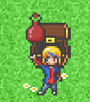

Mahou Shoujo Monogatari Devlog[0]
Getting Past The Tutorial Phase
Hello everyone and welcome to the first devlog for my 2D Java indie game, Mahou Shoujo Monogatari! This first devlog, we'll go through in detail some of the stuff I've been working on behind the scenes for Mahou Shoujo Monogatari, so let's dive in with a quick overview of what's in this devlog!
Overview
First off, I'll discuss what everyone knows as the tutorial phase, as my game was initially developed with the assistance of some amazing Java game development tutorials and then, we'll move on to discussing how I went from the tutorials to working solo on the first major feature of my game: the RPG Battle System, so without further ado, let's dive into this devlog!

Part 0 - The Initial Ideas
So first off, I'd like to mention how this game idea had started. It started off as an idea back in 2015 when I wrote a NaNoWriMo novel titled Hollows Academy, which was a fantasy magical girl story about the protagonist, Maybella-Jean and her group of friends who set out on an adventure to fight the wicked Winter Witch as they learned the ropes of magic and what it took to be a magical girl through their studies. While back then, I initially planned to make this a 7 part novel series, about two chapters into the writing of the second novel, I found myself losing interest in the series overall, mostly due to the fact that the first novel was not well written and was written by a 13-year-old me. As time went on, I had always thought about these characters and this story and wondered if there was something more I could do with it. Pondering for years on end, I ultimately decided I would attempt to rewrite the original novel under a new title, which is when the series was then renamed to what I and now you know it as: Mahou Shoujo Monogatari. The only underlying problem was, my passion for Creative Writing was at an all time low and I found myself in a race against time figuring out if this was worth the pursuit and so, a new idea came to mind: Why don't we take the series and turn it into a video game instead? And thus, I began the search to learn game development with a new found hope for the series and fresh ideas in mind. At this point, I already had about a year's worth of experience in Java and 2 years in Python and found myself needing an excuse to explore the Java programming language, as I had found myself enticed by the power of Java and so, that's when I decided, I will try to program this game in Java. But then arose another problem: I didn't know where to begin! So a search for a starting point began and eventually, it led me to a small YouTube channel. Ryisnow. This Java programmer from Tokyo, Japan had just released the newest episode in his "How To Make a 2D Game in Java" tutorial series and I took one watch and decided to follow along. And so I did and with the help of the tutorial and some additional help from Ryi himself, I had finally created a starting point. We had player movement, a title screen, an inventory system, an NPC, an enemy, collision and so many other basic technical aspects for a small simple computer game. It was then my desire to build upon what I had received from the tutorials and so, it begins, the development of my dream game, Mahou Shoujo Monogatari begins.


Part 1 - The Next Chapter
With the foundation for many of the game's systems, such as the system for drawing the Game Panel and the system for handling various sounds, established from RyiSnow's tutorials, it was time to go rouge. Time for me to take the reign and take this game even further. And so, I tackled arguably the most important system for a JRPG game: the battle system. Now with most JRPGs, we see turn-based combat, where the player and each character in the player's current party usually attack first and then the enemy will attack the player and party afterwards and loop until either the player and party are defeated or the enemy is defeated and so with this in mind, I began development on the battle system. First off, I wanted to make it so the player could choose from three different actions after encountering an enemy: attack with the player's currently equipped weapon, use an item from the player's item inventory or to run from the encountered enemy. The first thing I tackled of these three options was the run option, as all this would require is a simple switch from the battle state to the default play state ad so, with just two lines of code, one for switching the game state and one for reseting the enter key's pressed boolean value to false, we now could run from an encountered enemy. Okay so that wasn't so bad getting the basics of the run mechanic implemented. Now I had to work on the other two options, so next I chose to tackle the Attack option. Now to say this was complex is an understatement. In a language like C# and a proper game engine like Godot, it would be fairly simple to add in and program different sets of dialogue for the player's turn with different action menus that allow you to select options, but as I chose to take the challenge of creating a game with Java, we have to do these things more manually and programmatically.
So I ultimately decided to write separate methods, a battleState method that will be called in the UI Class's draw method, thus allowing whatever is within the battleState method to draw on a continuous loop at the game's set framerate of 60FPS. Within the battleState, we then call the first line of dialogue, "Encountered a (insert enemy name here)", and then with a press of the enter key registered, move onto the next line of dialogue in the dialogues 2D array, "What will Jeanne do?" and then call a new method, drawActionsMenu, which will then draw a small menu to the screen containing the three selectable options, Attack, Use Item or Run. The comes the next part in the sequence, if the player selects the Attack option, it will change the sub state of the game (which is initially set to 0 when the battle state is initially called). By changing the sub state to a value of 1, I was therefore able to write a new method, attackState, which would handle a new check: If the player has an equipped weapon. I then wrote a simple conditional statement, if the player's current weapon (represented by the variable, currentWeapon) is null or therefore, the player did not equip a weapon from the weapons inventory, then the dialogue will display as "You can't attack without a weapon" and return to the previous sub state (0), in which it will recall the drawActionsMenu method and redraw the corresponding dialogue and actions menu. I then added a switch statement to define cases for if the player does have a weapon, as I wanted to be able to display a set of 4 attacks for each different weapon, so if the player has equipped the Magician's Book, it will display 4 spell attacks, but if the player has a sword equipped, then it would display it's own unique set of 4 attacks, so to achieve this, I wrote out the first case in the switch statement for when the player's current weapon is the Magician's Book (the default weapon of the game).
I then wrote out a new method to handle drawing the attack options menu for the selected weapon,drawAttackOptions, which would take the information of the player's currently equipped weapon to determine which 4 attacks should be options for the player to choose from. I then went back to the attackState method and set it so that if the player does have a weapon equipped (ie, currentWeapon is equal to a String value as the name of the weapon is stored as a String), then the sub state of the game progresses further into a 2nd sub state (represented by subState = 2), which will then call the drawAttackOptions method and therefore, it will draw a new actions menu with the attack names retrieved from the weapon's class (Each weapon has it's own class, each with a length 4 array storing attack names to each index of the array, which is then retrieved by the drawAttackOptions menu in order to draw the unique attacks to the new selection menu). And with that, all I'd have to do is calculate the damage needed to be done to the monster and thus, the player's turn mechanics are complete. Now the next step is to write the enemy's AI to select an attack to damage the player with and apply the ability to loop between turns until either the player or the enemy is defeated and to add in the role of the NPCs in a player's party if there are any NPCs in the player's party.

Part 2 - Conclusion
And thus is where this initial devlog ends. While brief, I made some good progress on the first real complex system of the game and now the next steps going further are to polish the player's turn, determine NPCs turns if there are any and then determine what the enemy's turn would look like, all of which I have a newfound idea and understanding of how to do. When I first began making this game, things did and didn't make sense. It made sense programmatically in the Java programming language, but the mechanics and how to write them did not make sense at first, but over the last 8 months since I've begun developing Mahou Shoujo Monogatari, I've gained a newfound understanding of game development as well as enhanced my Java knowledge and I cannot wait to work more and put out more devlogs for Mahou Shoujo Monogatari.
I would love to end off my very first devlog with my thanks to RyiSnow. Without his awesome tutorials, I wouldn't have ever known how to get as far as I did get so far with Mahou Shoujo Monogatari and I recommend watching his various Java tutorials if you are interested in tackling game development in the Java programming language much like I did! Until next time, adieu!
Come find RyiSnow here!